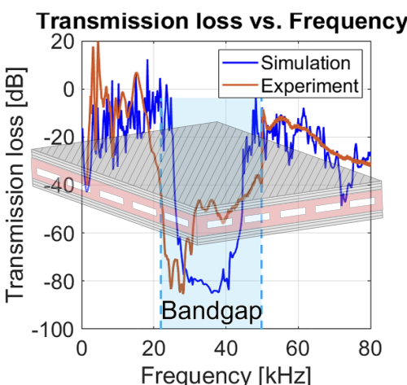

Design and Fabrication of Phononic Sandwich Composite Structures
Funding Program: TÜBİTAK 1001 – The Scientific and Technological Research Projects Funding Program (2026–2029)
Project Title: Innovative integrated design and 4D printing for the development of phononic sandwich composite structures with tunable bandgap behavior
Principal Investigator: Dr. Bekir Bediz (Sabanci University)
Researchers: Dr. Bahattin Koc (Sabanci University), Dr. Ali Fallah (Atilim University), Saeed Lotfan
Advisor: Dr. Kamer Kaya (Sabanci University)
This project focuses on the integrated design, analysis, and 4D printing of phononic sandwich composite structures with tunable bandgap behavior. The overall aim is to develop advanced structural concepts whose dynamic response can be tailored through geometry, material architecture, and smart design strategies. The project combines design methodology, fabrication, and vibration-based performance evaluation to explore new possibilities for controllable wave propagation and vibration attenuation in engineered composite systems.